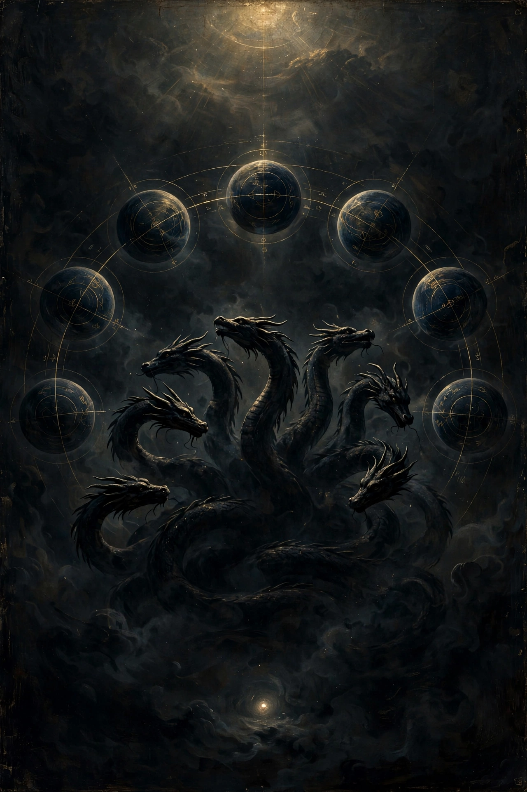

Does the Bible connect to the Gnostics, or is it from the seventh archon? The Gnostic answer is: both. And that is the whole point of how they read it.

The Bible is a mixed book. Some of it is the Father's voice breaking through. Some of it is the seventh archon's voice, the demiurge claiming to be God. The Gnostics read it by testing every passage against the spark: what brings fear, blindness, and obedience is from below. What brings light, knowledge, and freedom is from above.
The god who walks in the garden, forbids the tree of knowledge, floods the world, and says "I am God and there is no other" (Isaiah 45:5) — that is the demiurge's boast. The Apocryphon of John quotes that exact line as Ialdabaoth speaking, not the true God.
In their retelling of Genesis, the serpent is not the villain. The serpent is the one who brings knowledge, and the creator is the one who tries to keep it from you. They ate. Their eyes opened. The exile out of Eden reads, in this telling, like an escape the guards dressed up as a punishment.
They did not throw the Bible away. They claimed it. Their favorite books were the Gospel of John and Paul's letters, because those are the books that talk about the Light, the rulers of this world, and the Kingdom within.
Jesus, in their reading, came from the Father above, not from the demiurge, to wake the sparks up. That is why the Gospel of John sounds so Gnostic. It is the most Gnostic book in the canon.
The Gnostics said the church kept the outer, literal reading: obey, fear, submit to the creator god. They claimed the inner reading: the Bible is a map of the ascent, and you read it with the spark as the guide.
That is why the church fathers called them heretics. They were reading the same books and reaching a different God.
Not the whole book. The law, the jealousy, the "do not eat, do not know" parts — those are his. The Light passages, John, Paul's archon passages, "the Kingdom is within you" — those are the Father's voice coming through his book anyway.
The Bible is a battlefield between the two gods, and the reader is the one who decides which voice she is hearing. That is also why the morning practice works the way it does. You do not need a priest to tell you which passages are from above. The spark recognizes its own.
The passages that carry the map, in the King James wording, grouped by what they hold.
John 1:9 — "That was the true Light, which lighteth every man that cometh into the world."
1 John 1:5 — "God is light, and in him is no darkness at all."
James 1:17 — "The Father of lights, with whom is no variableness, neither shadow of turning."
John 8:12 — "I am the light of the world: he that followeth me shall not walk in darkness, but shall have the light of life."
2 Corinthians 4:4 — "The god of this world hath blinded the minds of them which believe not."
John 12:31 — "Now shall the prince of this world be cast out."
John 14:30 — "The prince of this world cometh, and hath nothing in me."
Ephesians 6:12 — "For we wrestle not against flesh and blood, but against principalities, against powers, against the rulers of the darkness of this world, against spiritual wickedness in high places."
Colossians 1:13 — "Who hath delivered us from the power of darkness, and hath translated us into the kingdom of his dear Son."
1 Corinthians 2:8 — "Which none of the princes of this world knew: for had they known it, they would not have crucified the Lord of glory."
Luke 17:21 — "The kingdom of God is within you."
1 Thessalonians 5:5 — "Ye are all the children of light, and the children of the day."
Romans 8:16 — "The Spirit itself beareth witness with our spirit, that we are the children of God." That one is the recognition piece: the Spirit in you knowing where it came from.
Matthew 16:23 — "Get thee behind me, Satan." The same move as the Phrase, spoken to the one blocking the way.
The cup of forgetfulness is not in the Bible. It comes from the Pistis Sophia, so the "do not drink from the cup" line stays a Gnostic book line. And Psalm 82, "ye are gods," is the other passage people point to when they talk about the rulers — but it is a harder read, and it is left off this page on purpose.